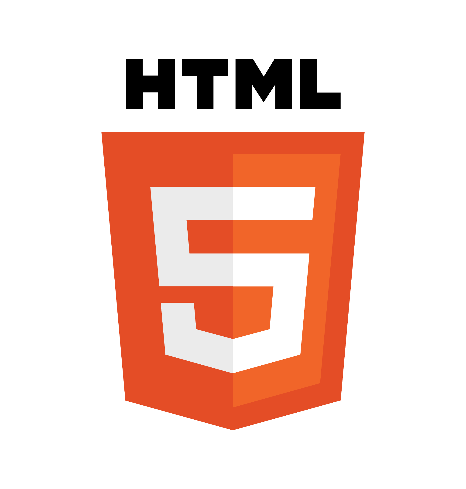

فناوریهای استفاده شده
ابزارها و فناوریهایی که برنویس را ممکن ساختند

HTML5
ما باور داریم که آینده توسعه نرمافزار در همکاری انسان و هوش مصنوعی است. برنویس، تجلی این باور است.
ایجاد بهترین ابزارهای نگارش فارسی با بهرهگیری از فناوریهای نوین و تمرکز بر نیازهای واقعی کاربران فارسیزبان. ما میخواهیم تجربه نوشتن به زبان فارسی را به سطحی جدید برسانیم.
آیندهای که در آن هر فارسیزبان، صرفنظر از دانش فنی، دسترسی به ابزارهای قدرتمند و استاندارد برای خلق، ویرایش و به اشتراکگذاری محتوا دارد. جایی که مرز بین ایده و اجرا به حداقل میرسد.
اصولی که مسیر ما را رسم میکنند
تمام کدهای ما برای همه در دسترس است. ما به قدرت جامعه و شفافیت اعتقاد داریم.
از هوش مصنوعی به عنوان ابزاری برای توانمندسازی استفاده میکنیم، نه جایگزینی انسانها.
ابزارهایمان برای همه طراحی شدهاند، از مبتدی تا حرفهای، از دانشجو تا توسعهدهنده.
زبان فارسی در مرکز توجه ماست. هر ویژگی با توجه به ویژگیهای این زبان زیبا طراحی میشود.
از ایده تا اکوسیستم
همه چیز با یک سوال ساده شروع شد: چرا ابزارهای نوشتاری فارسی نباید به اندازه نمونههای انگلیسی قدرتمند باشند؟
استفاده از هوش مصنوعی برای ساخت پارسنشان - اولین مفسر مارکداون که واقعاً فارسی را درک میکند.
افزودن دبیر و پارسینگار، ترکیب توسعه توسط AI و انسان، و شکلگیری خانواده برنویس.
ایجاد جامعهای از توسعهدهندگان، نویسندگان و علاقهمندان که با هم آینده نوشتار فارسی را میسازند.
ابزارهای بیشتر، ویژگیهای پیشرفتهتر، و یک اکوسیستم کامل برای تمام نیازهای نوشتاری فارسی.
برنویس با همکاری افراد، هوش مصنوعی و جامعه متنباز ساخته شده است
برنامهنویسان با تجربه که با خلاقیت و دانش فنی خود، پروژههایی مانند شهنشان و کراسه را ساختهاند.
کراسه، شهنشانمدلهای زبانی پیشرفته (Claude, GPT, Gemini) که در نقش توسعهدهنده، کد با کیفیت و کارآمد تولید کردهاند.
پارسنشان، دبیر، پارسینگارکاربران، تستکنندگان و مشارکتکنندگان در گیتهاب که با بازخورد و مشارکت خود، پروژهها را بهتر میکنند.
همه پروژههاابزارها و فناوریهایی که برنویس را ممکن ساختند
برنویس متعلق به جامعه است. هر مشارکتی، چه کوچک چه بزرگ، ارزشمند است.